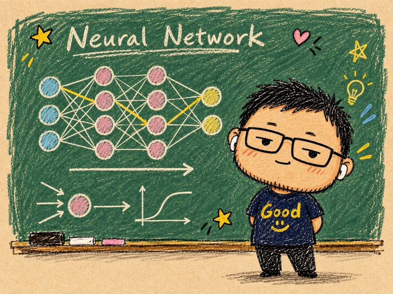
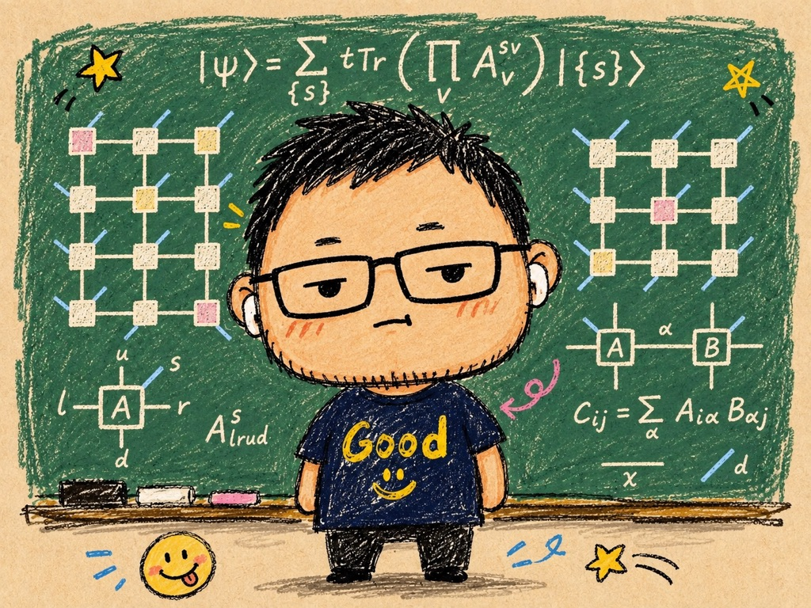
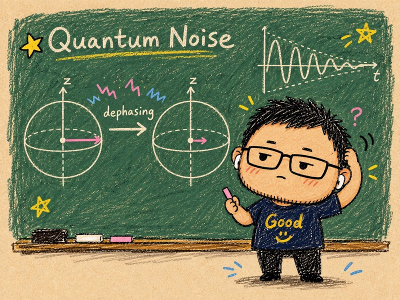

Learning representation
Tensor-network approaches to generative modeling, supervised learning, and the compression of deep neural networks.
Tensor networks and quantum information
Associate Professor, Quantum Symmetry Group
Beijing Institute of Mathematical Sciences and ApplicationsI study the connections between quantum many-body physics, quantum computing, and machine learning through the language of tensor networks.

Contact
chengsong@bimsa.cnOffice A3-3a-303, BIMSAHuairou, Beijing, China
Career
Research

Tensor-network approaches to generative modeling, supervised learning, and the compression of deep neural networks.

Classical simulation of noisy quantum circuits and quantum dynamics, with an emphasis on operator complexity and error mitigation.

The structure of topological quantum states and quantum error-correcting codes, explored through tensor networks and diagrammatic methods.
Watch
A narrated tour from the exponential wall of quantum states through matrix product states, DMRG, PEPS and 3D coarse-graining, via SPT and topological order, to noisy circuits, quantum error correction, machine learning and holography.
Publications
Teaching
I teach the theory and algorithms of tensor networks at BIMSA, from their mathematical structure to applications in quantum physics and machine learning.
National Natural Science Foundation of China, General Program
Principal investigatorBeijing Natural Science Foundation, Key Research Topic
ParticipantNational Natural Science Foundation of China, Young Scientists Fund
Principal investigator